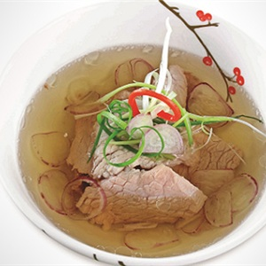

Canh thịt bò thuôn hành

- Khẩu phần 4
- Chuẩn bị 15 phút
- Thực hiện 15 phút
Nguyên liệu
- 300g thịt bò phi lê
- 100g hành tím
- 50g hành lá
- 3 thìa cà phê hạt nêm từ Thịt Thăn, Xương
Ống và Tủy - Bổ sung Vitamin A, 1 thìa cà phê nước mắm chấm , 1/2 thìa cà
phê tiêu, 1 thìa cà phê dầu ăn
Hướng dẫn thực hiện
- Thịt bò phi lê cắt miếng vừa ăn. Ướp thịt bò với 1 thìa cà phê hạt nêm
từ Thịt Thăn, Xương Ống và Tủy - Bổ sung Vitamin A, 1 thìa cà phê dầu ăn
- Hành tím lột vỏ, xắt lát mỏng. Hành lá xắt nhỏ
- Cho 700ml nước vào nồi nấu sôi, cho hành tím vào, để sôi lại, cho thịt
bò vào, hạ nhỏ lửa khoảng 3 phút, nêm 1 thìa cà phê nước mắm chấm , 2 thìa
cà phê hạt nêm từ Thịt Thăn, Xương Ống và Tủy - Bổ sung Vitamin A vào,
nước sôi lại thì cho hành lá vào, tắt bếp
- Múc canh ra tô, rắc tiêu lên, dùng nóng .